Al ser depredadores topes en la cadena alimentaria, ayudan a controlar las poblaciones de presas, manteniendo el equilibrio en el ecosistema y preservando la salud de
otras especies al eliminar individuos debilitados o enfermos. Además, la conservación de los felinos contribuye a la biodiversidad al proteger una variedad de especies de presas.
La presencia y salud de los felinos también sirve como indicador de la salud general del ecosistema. Además, los felinos pueden tener beneficios económicos a través del ecoturismo
y desempeñan un papel importante en la educación y sensibilización sobre la conservación de la vida silvestre debido a su carisma y belleza.
Los felinos son los aquellos mamíferos carnívoros que se engloban dentro de la familia Felidae y de las que se conocen alrededor de 40 especies. Se trata un grupo animal de los más reconocidos como cazadores dentro del reino animal por ser muy sigilosos, veloces y certeros. La mayoría son carnívoros y suelen sentir predilección por las presas vivas. Algunas de las especies que pertenecen a esta familia son el león, el leopardo, el lince ibérico, el puma, el jaguar y una gran variedad de tipos de gato –el gato pescador, el gato de Borneo, el gato de cabeza plana, el gato dorado africano, etc.
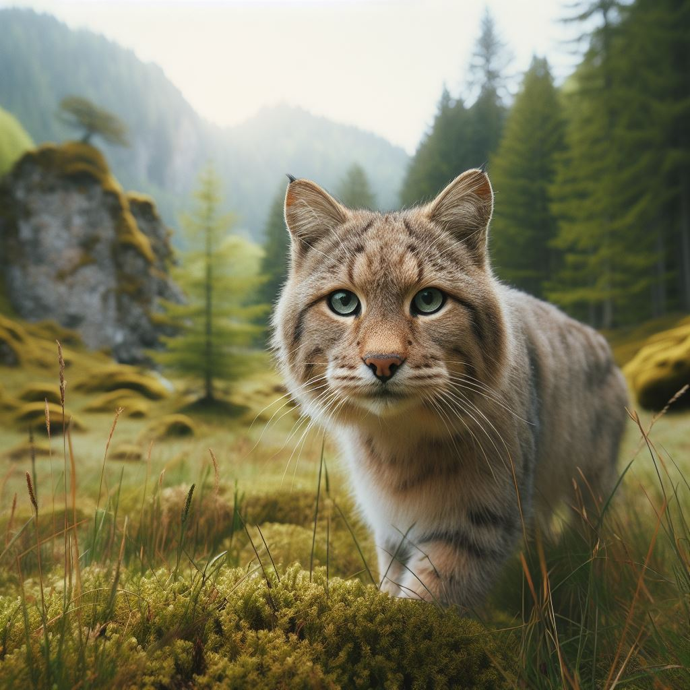
Estas majestuosas especies, que alguna vez prosperaron en hábitats extensos y diversos, enfrentan hoy amenazas significativas que ponen en riesgo su supervivencia a largo plazo.
Pérdida de Hábitat:
Deforestación: La expansión agrícola, la tala de bosques para la obtención de madera y otros fines, así como la conversión de tierras para el desarrollo urbano, contribuyen significativamente a la pérdida de hábitat. Estas actividades reducen el espacio disponible para los felinos y fragmentan sus hábitats naturales, dificultando la búsqueda de alimentos y la reproducción.
Infraestructura: La construcción de carreteras, represas y otros proyectos de infraestructura puede fragmentar los hábitats, aislando poblaciones de felinos y limitando su capacidad para desplazarse y encontrar pareja.
Caza Furtiva
Piel y Partes del Cuerpo: La caza furtiva para obtener pieles y partes del cuerpo de estos felinos, impulsada por el comercio ilegal de fauna, es una amenaza seria. Los felinos son a menudo cazados por sus pieles, huesos y otros productos, que son comercializados en el mercado negro.
Conflictos con Ganadería: En algunas áreas, la caza furtiva también puede estar relacionada con conflictos con ganaderos. Cuando los felinos atacan al ganado, los ganaderos pueden responder cazando a los felinos para proteger su ganado
Impactos Adicionales:
Cambios Climáticos: Los cambios climáticos pueden afectar los patrones de distribución y comportamiento de estas especies, alterando sus hábitats y presas naturales.
Enfermedades y Fragmentación Genética: La fragmentación del hábitat puede aumentar la susceptibilidad de los felinos a enfermedades, y la fragmentación genética resultante puede tener efectos a largo plazo en la salud de las poblaciones.
El felino Puma
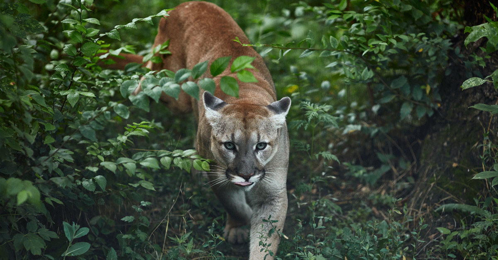
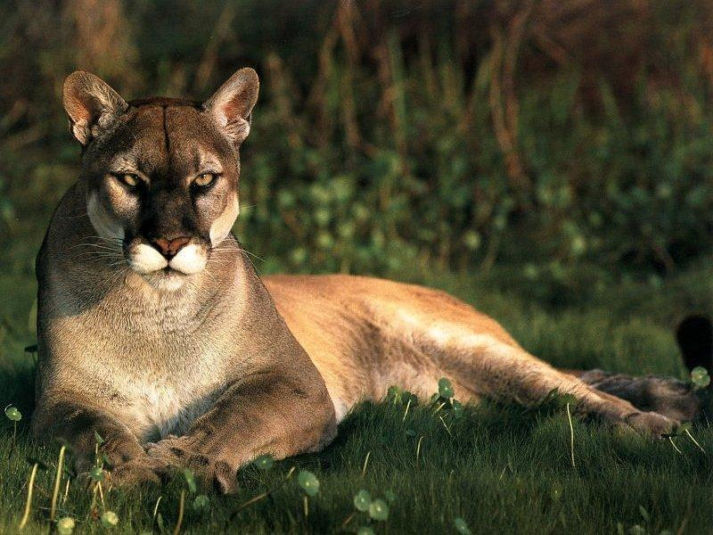
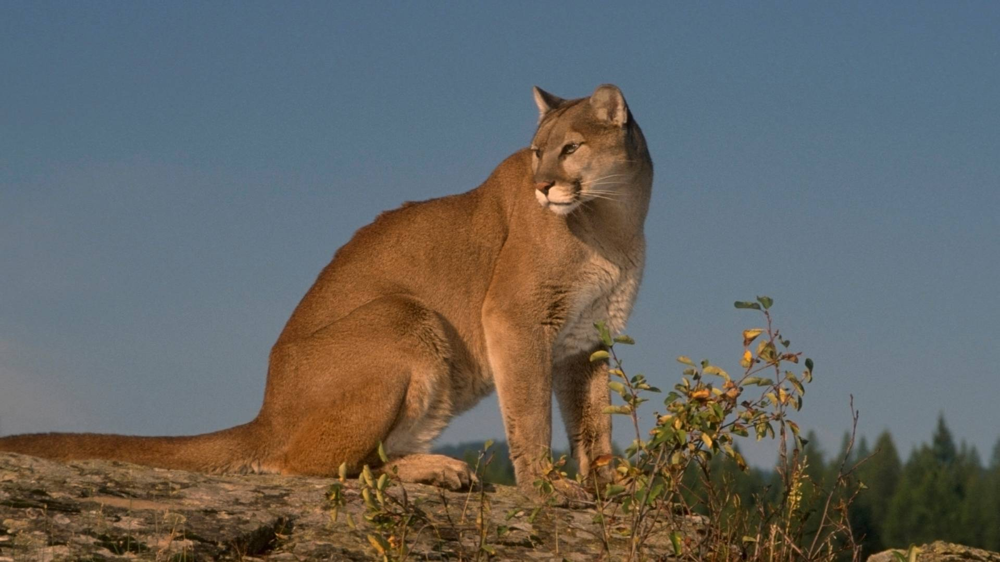
El puma centroamericano o puma costarricense (Puma concolor costaricensis) es una de las subespecies en que se divide la especie
de Puma concolor, denominado comúnmente «puma» o «león de montaña». Aquí hay algunas de las características físicas más destacadas del puma:
Tamaño y Estructura Corporal:
Los pumas son grandes felinos con cuerpos musculosos y compactos.
Tienen una cabeza grande y redondeada, con orejas pequeñas y redondeadas en comparación con otros grandes felinos.
Pelaje
El pelaje del puma es corto y suave
El color del pelaje varía considerablemente y puede ir desde tonos grises y marrones hasta rojos o amarillos. La parte inferior suele ser más clara.
Color de Ojos
Los pumas tienen ojos grandes y redondos. El color de los ojos es generalmente de tonalidades amarillas o doradas
Cola
La cola del puma es larga y esbelta, con una punta negra. Se utiliza para el equilibrio, especialmente durante la caza y el salto
Garras Retráctiles
Al igual que otros felinos, los pumas tienen garras retráctiles que utilizan para cazar y trepar
Estas garras se mantienen retraídas cuando no están en uso, ayudando a mantenerlas afiladas.
Dientes y Estatura
Los pumas tienen dientes afilados y poderosos adaptados para desgarrar la carne de sus presas. Su dentición refleja su condición de carnívoros.
Los machos son generalmente más grandes que las hembras. Los pumas varían en longitud, pero su longitud total, incluida la cola, puede superar los 2 metros.
Alimentación
Por lo general caza de noche. Pueden trasladarse por largas distancias en busca de alimento. Se alimentan principalmente de mamíferos y en ocasiones llega a atacar al ganado doméstico. Su presa principal es el venado cola blanca, pero también se alimentan del zorro pelón, mono congo, mono colorado, mono carablanca, puerco espín, guatusa, rata de monte, iguana y tortuga lora.
Estado de conservación
Las poblaciones de pumas pertenecientes a esta subespecie han sufrido una reducción de su geonemia, aunque todavía habitan en regular número en muchos sectores de su antiguo territorio, por lo que la UICN la categoriza como de «Preocupación menor», si bien algunos especialistas creen que sería mejor un cambio a la categoría de «Vulnerable».
En Costa Rica, esta especie está considerada como amenazada. Está protegida y regulada por la Ley de Conservación de la Vida Silvestre N.º 7317, la Ley Orgánica del Ambiente N.º 7554 y el decreto N.º 26435-MINAE.
Se grabo un video donde aparece el Puma
El Jaguar
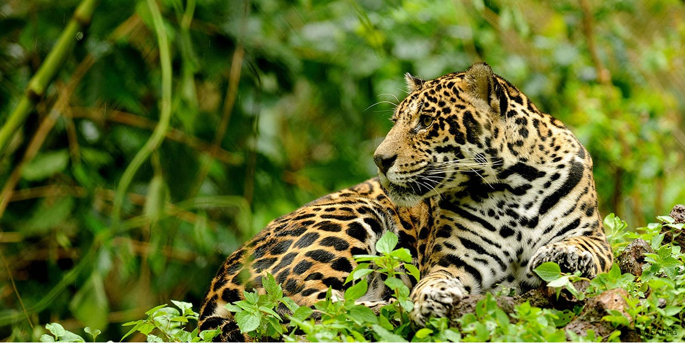
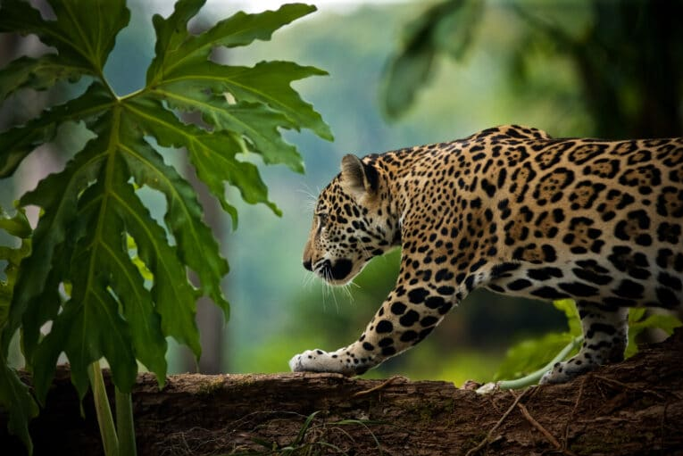
El jaguar, conocido localmente como "tigre" o "yaguar", es una especie de felino que habita en diversos hábitats de Costa Rica, desde bosques tropicales hasta zonas más secas. Es el felino más grande de América y se caracteriza por su robusto cuerpo, su cabeza ancha y sus poderosas mandíbulas. El jaguar es reconocido por su hermoso pelaje amarillo dorado con manchas en forma de rosetas, que le proporciona un camuflaje efectivo en su entorno natural.
En Costa Rica, el jaguar juega un papel crucial en el mantenimiento del equilibrio ecológico. Como depredador tope, controla las poblaciones de presas y ayuda a preservar la salud de los ecosistemas al eliminar individuos débiles o enfermos. Sin embargo, la población de jaguares en Costa Rica ha enfrentado amenazas, como la pérdida de hábitat y la caza furtiva.
Tamaño y Estructura Corporal
Los jaguares son robustos y musculosos, con cuerpos compactos y patas cortas pero fuertes.
Son el tercer felino más grande del mundo, después del tigre y el león, con los machos siendo generalmente más grandes que las hembras
Pelaje y Patrones de Manchas
Tienen un pelaje corto y denso que varía en color, desde amarillo dorado hasta marrón oscuro.
Los jaguares presentan un distintivo patrón de manchas en forma de rosetas en su pelaje, que es único para cada individuo.
Cabeza Grande y Mandíbulas Poderosas
Tienen cabezas anchas y robustas con mandíbulas extremadamente poderosas.
Los jaguares tienen la capacidad de ejercer una fuerza de mordida excepcionalmente fuerte, lo que les permite perforar los cráneos de sus presas.
Hábitos Acuáticos
A diferencia de otros grandes felinos, a los jaguares les gusta el agua y son hábiles nadadores.
Pueden cazar presas acuáticas, como peces y caimanes, y a menudo se les encuentra cerca de cuerpos de agua.
Territorio Amplio
Los jaguares son animales solitarios y territoriales que requieren grandes áreas para cazar y reproducirse.
La extensión de su territorio puede variar según la disponibilidad de presas y el hábitat.
Hábitos Nocturnos y Crepusculares
Son principalmente activos durante la noche y al amanecer y al atardecer, aunque también pueden cazar durante el día.
Su habilidad para cazar en la penumbra les proporciona una ventaja táctica sobre sus presas.
El Jaguar nadando
El Ocelote
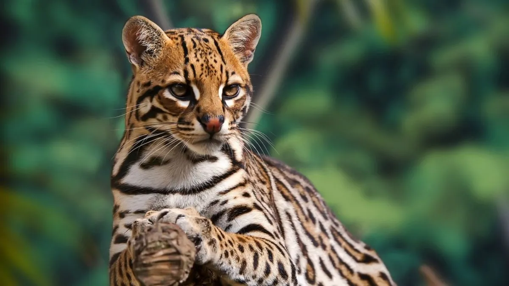
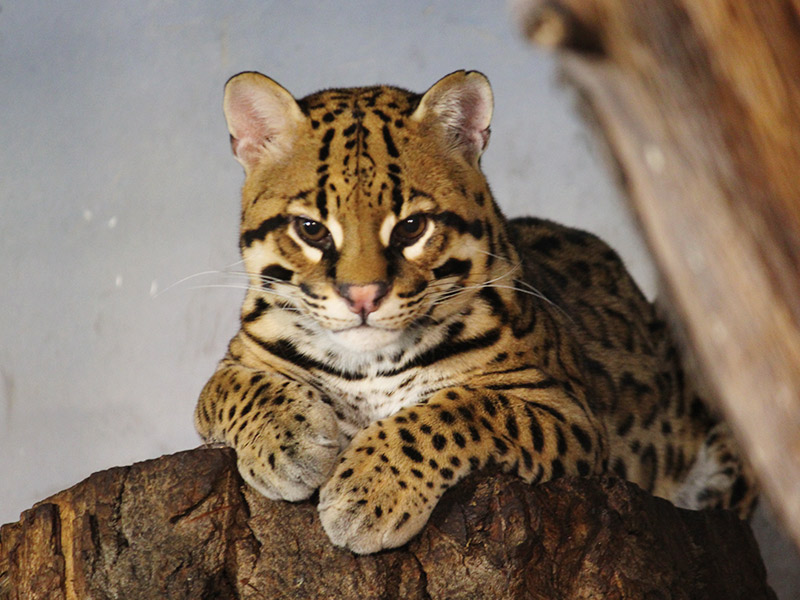
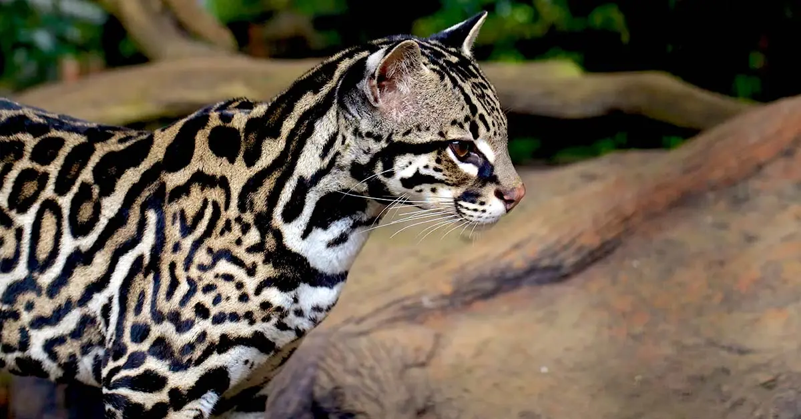
El ocelote, también conocido como manigordo, es un felino de tamaño medio que habita en diversas regiones de América, desde el Norte de los Estados Unidos hasta el Sur de Argentina.
El ocelote es un felino fascinante que contribuye significativamente a la biodiversidad y al equilibrio ecológico en Costa Rica. Su preservación es esencial para mantener la salud de los ecosistemas y garantizar la coexistencia armoniosa con otras especies en la región.
En el contexto de Costa Rica, el ocelote es una especie emblemática y juega un papel importante en el equilibrio ecológico. Aquí tienes una definición del ocelote en Costa Rica:
Descripción Física
El ocelote tiene un aspecto elegante y esbelto, con un pelaje corto y suave.
Su pelaje muestra un patrón característico de manchas oceladas en su cuerpo, cabeza y cola, lo que le da su nombre.
El color del pelaje varía, pero comúnmente es amarillo dorado con manchas negras.
Tamaño y Estructura
Es un felino de tamaño mediano, más grande que un gato doméstico pero más pequeño que un puma o jaguar.
Tiene patas relativamente cortas y orejas puntiagudas.
Hábitos y Comportamiento
Es un animal principalmente nocturno y crepuscular, lo que significa que es más activo durante la noche y al amanecer y atardecer.
Su dieta es variada e incluye pequeños mamíferos, aves, reptiles e insectos
Hábitat
El ocelote puede encontrarse en una variedad de hábitats, desde bosques tropicales hasta áreas más abiertas como sabanas y manglares.
Aunque son adaptables, prefieren áreas con vegetación densa para proporcionar cobertura mientras cazan.
Distribución en Costa Rica
El ocelote está presente en varias regiones de Costa Rica, incluyendo bosques lluviosos, bosques secos y áreas de transición.
Su presencia en diferentes ecosistemas subraya su capacidad para adaptarse a diversas condiciones
Importancia Ecológica
Como carnívoro, el ocelote desempeña un papel crucial en el control de poblaciones de presas y ayuda a mantener el equilibrio en los ecosistemas.
Su presencia también puede ser indicativa de la salud general de los hábitats en los que habita.
Conservación
El ocelote enfrenta amenazas similares a otros felinos, como la pérdida de hábitat, la fragmentación del paisaje y la caza furtiva.
La conservación del ocelote en Costa Rica implica la protección de sus hábitats naturales y la implementación de medidas para mitigar las amenazas.
El Margay
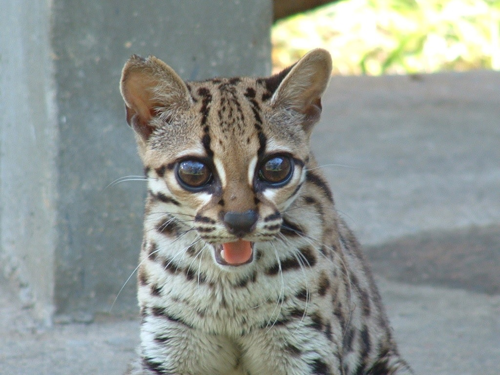
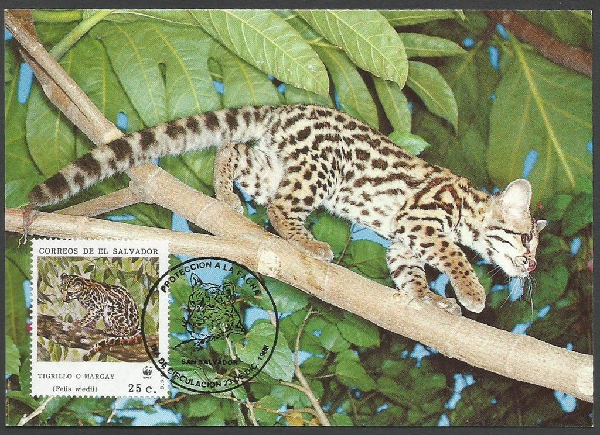
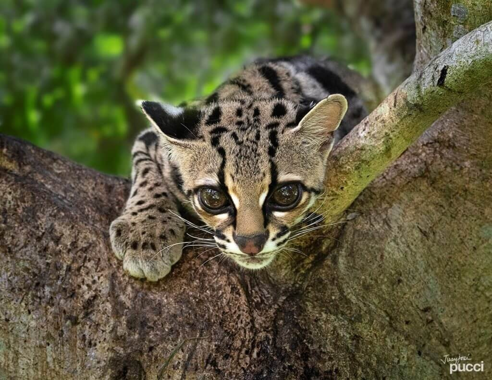
Es un felino habitante desde el norte de México hasta Uruguay. De las 6 especies de felinos que viven en Costa Rica, es el segundo de menor tamaño, con no más de 1 metro desde la nariz hasta la punta de la cola. Es de hábitos exclusivamente nocturnos y arborícolas, y durante el día se refugia en cuevas o troncos huecos, por lo que está considerado como uno de los mamíferos más difíciles de observar, lo cual explica el poco conocimiento de esta especie.
El margay destaca por su estilo de vida arbóreo y sus adaptaciones únicas para la caza en las copas de los árboles, lo que lo convierte en una especie fascinante y valiosa para la biodiversidad en Costa Rica. Su conservación es esencial para mantener la salud de los ecosistemas y garantizar su papel en la cadena alimentaria.
Es un felino pequeño y ágil que posee características únicas que lo distinguen en el reino animal. A continuación, según sus caracteristicas fisicas y cotidiano:
Descripción Física
El margay es un felino de tamaño pequeño a mediano, con un cuerpo esbelto y patas largas y delgadas.
Su pelaje es suave y suele tener un color amarillo grisáceo o amarillo parduzco con manchas y manchas oscuras que forman un patrón distintivo.
Tamaño y Estructura
Comparado con otros felinos, el margay es más pequeño y liviano.
Sus patas traseras son especialmente largas, lo que le otorga una capacidad notable para trepar árboles con agilidad.
Hábitos y Comportamiento
Al igual que el ocelote, el margay es principalmente nocturno y crepuscular, siendo más activo durante la noche y al amanecer y atardecer.
Tiene habilidades excepcionales para trepar y saltar entre las ramas de los árboles, donde pasa una parte significativa de su tiempo.
Hábitat
El margay prefiere hábitats boscosos, incluyendo bosques tropicales y subtropicales.
Es conocido por su habilidad para vivir en entornos arbolados y ha desarrollado adaptaciones únicas para la vida arbórea.
Dieta
La dieta del margay se compone principalmente de pequeños mamíferos, aves, insectos y otros animales pequeños que puede capturar en los árboles.
Su agilidad en los árboles le permite cazar presas inaccesibles para otros depredadores.
Distribución en Costa Rica
El margay se encuentra en varias regiones de Costa Rica, especialmente en áreas boscosas y selváticas.
Su presencia puede ser indicativa de la salud de los ecosistemas arbóreos en los que habita.
Importancia Ecológica
La presencia del margay contribuye al equilibrio ecológico al controlar las poblaciones de presas y participar en dinámicas tróficas en su hábitat.
Conservación
Al igual que otros felinos, el margay enfrenta amenazas relacionadas con la pérdida de hábitat y la fragmentación de los bosques.
La conservación del margay implica la protección de sus entornos naturales y la promoción de prácticas sostenibles.
El Yaguarundi
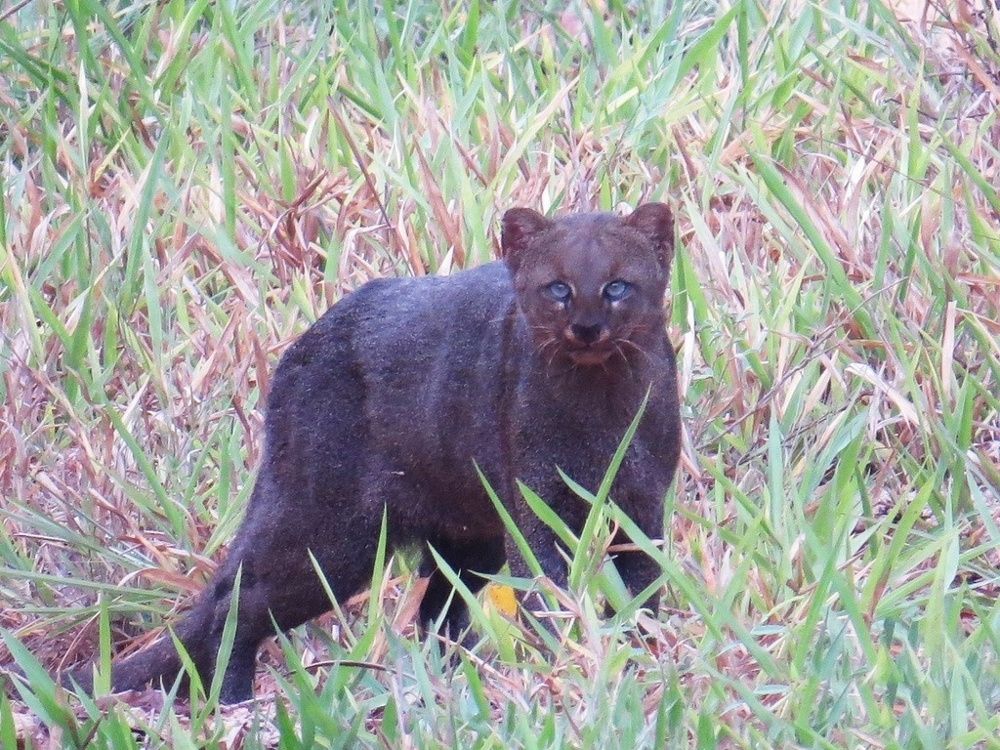
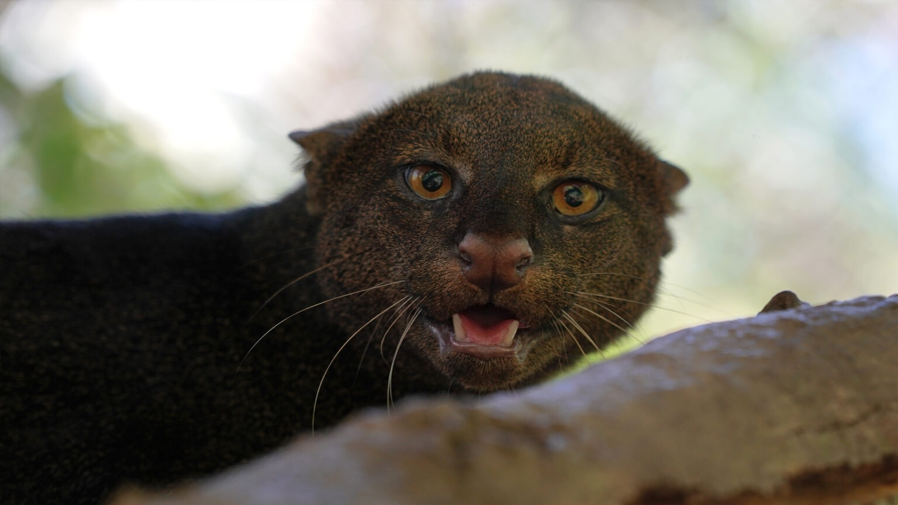
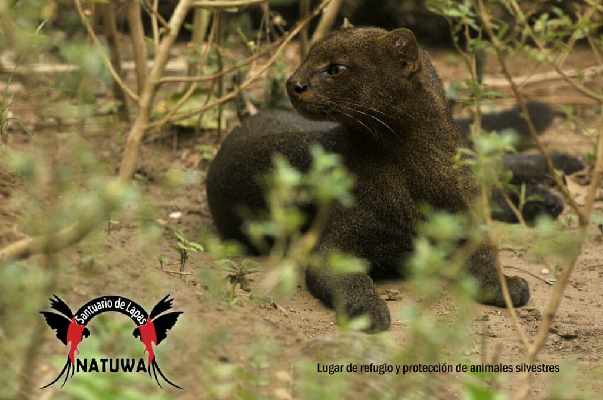
Aunque el yaguarundí no enfrenta las mismas amenazas que algunos felinos más grandes, la pérdida de hábitat y la fragmentación del paisaje pueden afectar su supervivencia.
La conservación implica la protección de sus hábitats y la promoción de prácticas que permitan la coexistencia con esta especie.
El yaguarundí es un felino nativo de América que se encuentra en diversos hábitats, desde manglares hasta bosques tropicales y subtropicales. En Costa Rica, se le conoce como "yaguarundí". Aquí tienes una definición de esta especie en el contexto costarricense:
Descripción Física
El yaguarundí tiene un cuerpo alargado y esbelto, con patas relativamente cortas en comparación con otros felinos.
Su pelaje es corto y suave, y su color puede variar desde gris oscuro hasta rojizo o amarillento, a menudo con un tono más claro en la parte inferior.
Tamaño y Estructura
Es un felino de tamaño mediano, más pequeño que el puma y el jaguar.
Tiene una cabeza pequeña con orejas redondeadas y una cola larga.
Hábitos y Comportamiento
A diferencia de algunos felinos, el yaguarundí puede ser diurno y crepuscular, lo que significa que es activo durante el día y al amanecer y atardecer.
Es un excelente trepador y nadador, lo que le permite explorar diversos entornos.
Hábitat
El yaguarundí se adapta a una variedad de hábitats, desde bosques hasta áreas más abiertas como matorrales y manglares.
Puede habitar desde tierras bajas hasta zonas montañosas.
Dieta
La dieta del yaguarundí es diversa e incluye pequeños mamíferos, aves, reptiles, peces e insectos.
Es un cazador ágil que puede perseguir presas tanto en tierra como en el agua.
Distribución en Costa Rica
El yaguarundí está presente en varias regiones de Costa Rica, desde las costas hasta las tierras altas.
Su capacidad para adaptarse a diferentes hábitats le permite habitar una variedad de entornos.
Importancia Ecológica:
Como depredador, el yaguarundí contribuye al control de poblaciones de presas y participa en la dinámica ecológica de los ecosistemas en los que vive.